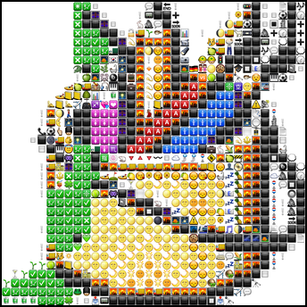

{{ errMsg }}
*Note: This site is not quite mobile-ready but will be in the next few days. For now, use a desktop browser for the best experience.
Welcome to the tiny_icon mosaic selector. Use this site to make photo-mosaic images like this:

Start by uploading an image, then adjust the icon and image sizes. You can also choose whether you want to build your photo-mosaic with emojis, or windows '95 icons. When you're ready, click the "iconify" button.